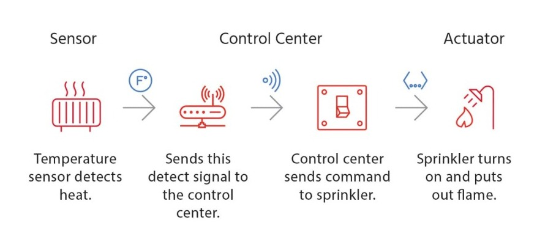
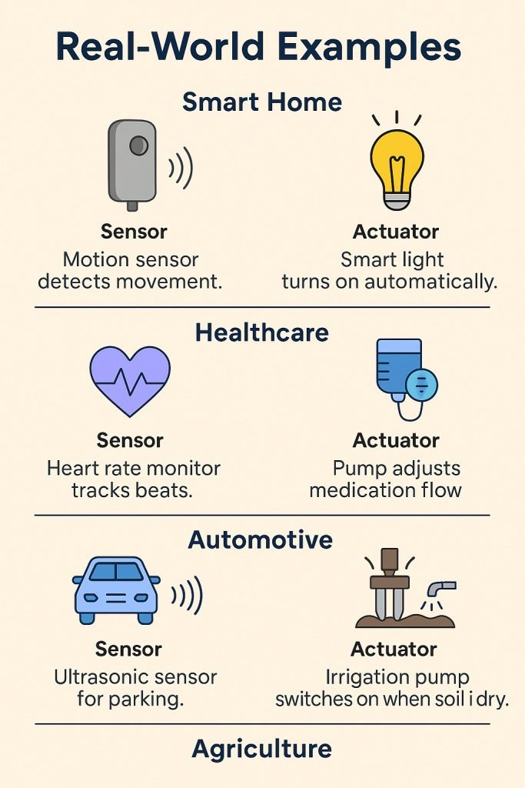
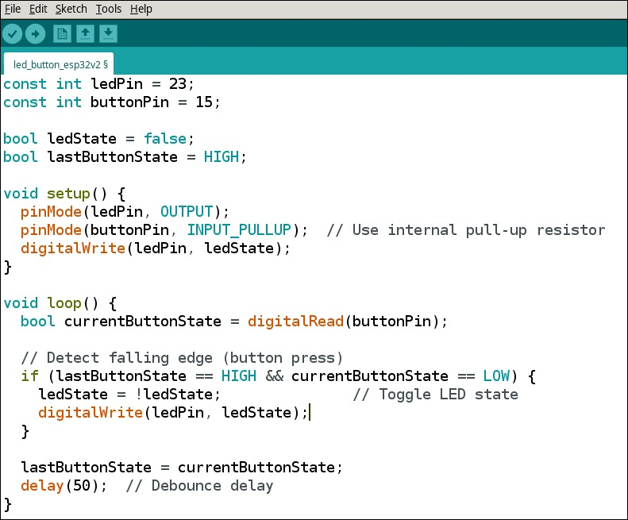

Sensors
Sensors are devices that detect and measure physical
properties such as temperature, pressure, light, or motion and convert them
into signals that can be read or recorded. They serve as the link between the physical
world and electronic systems
Sensor Characteristics
Static characteristics of sensors describe how a sensor
responds to constant or slowly changing inputs. These include properties like:
- accuracy
(how close the reading is to the actual value),
- precision (repeatability of measurements)
- sensitivity(how much the output changes with a small input change)
- linearity
(how closely the output follows a straight line over the input range)
- resolution (the smallest change a sensor can detect).
These characteristics help evaluate how reliable and
consistent a sensor is under stable conditions.
Dynamic characteristics of sensors describe how a sensor responds to inputs that change over time. These include properties like:
- response time (how quickly the sensor reacts to a change in input),
- rise time (time taken for the sensor output to go from a lower to a higher specified value),
- settling time (how long it takes the output to stabilize after a change),
- frequency response (how well the sensor can follow rapid changes in input).
These characteristics are important in applications where the sensor must track or respond to fast-changing signals accurately and efficiently.
Sensor Classification
- Passive vs. Active: Passive sensors operate without an external power source
(e.g., thermocouples), while active sensors require power to function (e.g., ultrasonic sensors).
- Analog vs. Digital: Analog sensors output continuous signals, whereas digital sensors provide discrete, binary signals.
- Scalar vs. Vector: Scalar sensors measure only magnitude (e.g., temperature sensors), while vector sensors measure
both magnitude and direction (e.g., accelerometers).
Types of Sensors
- Electrical Sensor: These can be contact or non-contact. Contact sensors complete a circuit when touched, while non-contact sensors detect metals using induction and non-metals using capacitance.
- Light Sensor: Also known as photo sensors, these detect light intensity. A common type is the Light Dependent Resistor (LDR), whose resistance decreases as ambient light increases.
- Touch Sensor: These detect touch, such as a finger or stylus. They are mainly of two types: resistive and capacitive, with capacitive being more accurate and widely used today.
- Range Sensing: Used to detect how close or far an object is. Short-range sensors use capacitance, inductance, or magnetic techniques, while long-range sensors use radio, sound, or laser waves.
- Mechanical Sensor: These involve physical switches like micro-switches that require force to operate. They are simple and often used in basic mechanical systems.
- Pneumatic Sensor: These detect proximity by disturbing airflow. They are contact sensors and not suitable for lightweight objects that could be displaced by air.
- Optical Sensor: Operates by breaking a light beam aimed at a light-sensitive device like a photocell. These non-contact sensors can be affected by environmental factors like dust, smoke, or bright flashes.
- Speed Sensor: Measures the speed of a moving object. Examples include wind speed sensors, speedometers, and ground speed radars.
- Temperature Sensor: Converts temperature into an electrical signal (usually voltage), which is proportional to the temperature. Used in both industrial and consumer devices.
- PIR Sensor: Passive Infrared (PIR) sensors detect infrared radiation from objects, mainly used for human motion detection and security systems.
- Ultrasonic Sensor: Uses high-frequency sound waves to detect distance or presence of objects, similar to SONAR or RADAR systems.
Actuators
Actuators are components that carry out physical actions based on signals from a microcontroller or processor. They convert electrical signals into mechanical movement, such as turning a motor, opening a valve, or moving a display.
Types of Actuators
-
Hydraulic Actuators: Use pressurized fluid to create mechanical motion (linear, rotary, or oscillatory). Commonly used in construction equipment for tasks requiring high force.
- Advantages:
- Generate high force and speed.
- Used in welding, clamping, and vehicle lifting systems.
- Disadvantages:
- Fluid leaks reduce efficiency and require cleanup.
- Expensive with high maintenance needs.
- Requires additional components like noise reduction systems.
-
Pneumatic Actuators: Use compressed air or vacuum to produce motion. Common in robotics, mimicking human finger movement.
- Advantages:
- Low cost and safe in extreme temperatures.
- Durable, low maintenance, with fast response.
- Disadvantages:
- Pressure loss reduces efficiency.
- Requires a constantly running air compressor.
- Compressed air may be polluted and needs filtering.
-
Electrical Actuators: Convert electrical energy into mechanical torque, often using motors. Example: Solenoid-based electric bells.
- Advantages:
- Quiet, clean, and safe (no fluid leakage).
- Programmable with high precision control.
- Disadvantages:
- Can be expensive.
- Performance can be affected by environmental factors.
-
Other Actuators:
- Thermal/Magnetic Actuators: Use heat or magnetic energy, e.g., piezo motors with Shape Memory Alloys (SMAs).
- Mechanical Actuators: Convert rotary motion to linear using gears, pulleys, etc. Example: crankshaft.
- Soft Actuators: Include Shape Memory Polymers and Light Activated Polymers for flexible, adaptive movement.
With the growth of IoT, actuators are increasingly used in industrial, commercial, and home applications alongside sensors.
Differences between Sensors and Actuators

Interfacing LED with a push button
ESP32
Code

Video
View youtube video